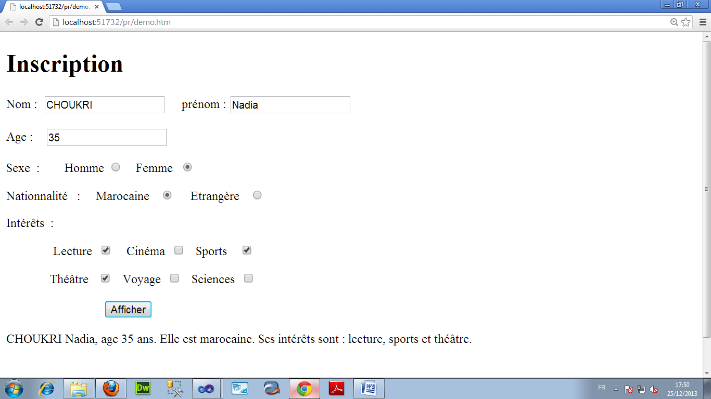
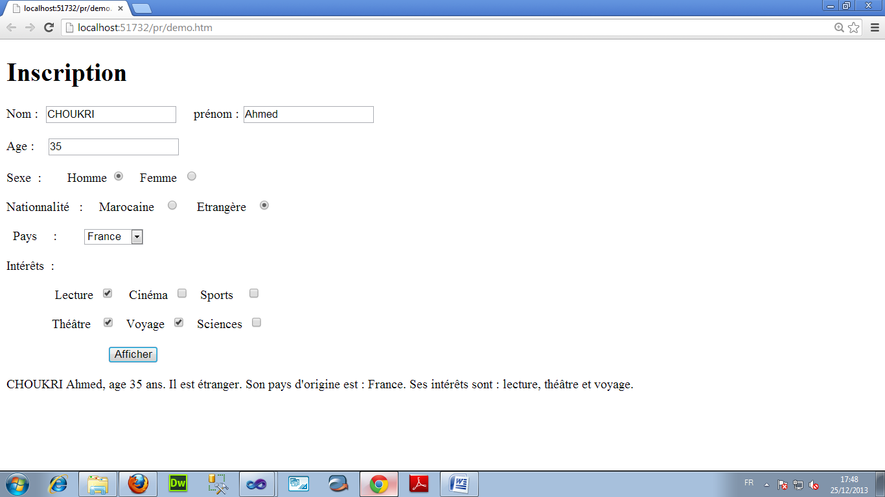

Une page web contient un formulaire d’inscription ; il permet à un utilisateur de saisir son nom, son prénom, le sexe et la nationalité. Le formulaire permet aussi de choisir les intérêts de l’utilisateur sous forme de cases à cocher (Lecture, cinéma, …). Après un clic sur le bouton Afficher, le formulaire affiche un bloc de texte contenant un résumé de la saisie de l’utilisateur comme dans la figure suivante :

Si l’utilisateur choisit l’option Etrangère (pour la nationalité), un panneau (une balise div) devient visible ; il contient une liste pour le choix du pays d’origine de l’utilisateur. Le message affiché inclut alors le pays comme dans la figure suivante :

- Ecrire le code HTML de la page web.(3 pts)
- Ecrire le code JavaScript (ou JQuery) du bouton afficher pour réaliser les fonctionnalités demandées,et faire l’affichage selon les contraintes suivantes:(3 pts)
- -Si l’utilisateur choisi un seul intérêt, le message s’affiche comme cet exemple :
- CHOUKRI Nadia, âge 35 ans. Elle est marocaine. Son intérêt est: lecture
- -Si par contre l’utilisateur effectue plusieurs choix, les intérêts sont séparés par des virgules sauf le dernier qui est précédé par un « et » comme suit :
- CHOUKRI Nadia, âge 35 ans. Elle est marocaine. Ses intérêts sont : lecture, cinéma et sciences.
- -Le message affiché doit également tenir compte du choix du sexe : affichage de « IL est marocain » ou « Elle est marocaine » selon le choix Homme ou Femme.